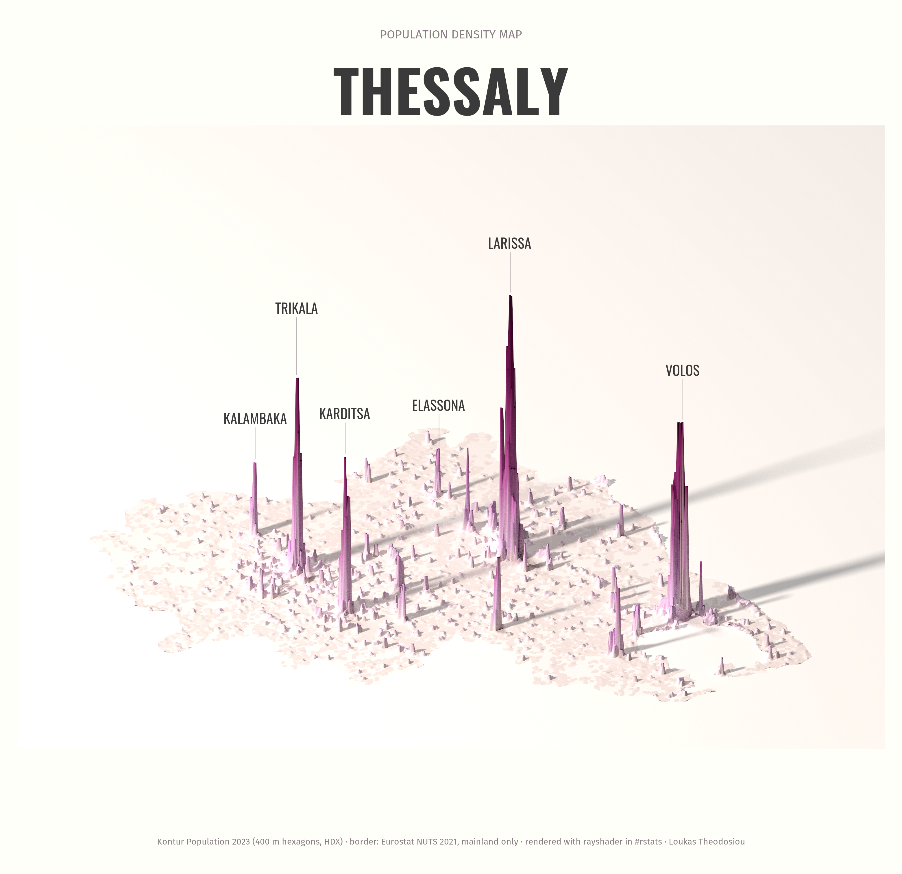
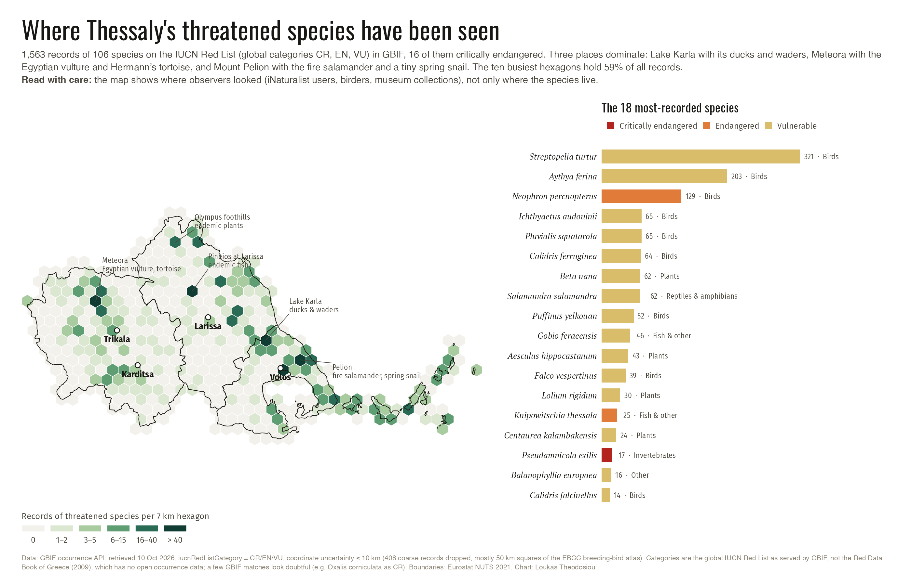
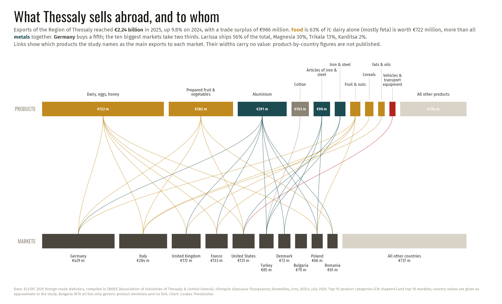

Population density of Thessaly in 3D
donerayshader spike map, labels placed with magick. Sporades (~13,000 people) cropped. A darker first version is kept as…_v1grey.png.
Where Thessaly's threatened species have been seen
doneHex-bin map + 18 most-recorded species. Hotspots verified in the data: Lake Karla, Meteora, Pelion. Global IUCN categories, not the Greek Red Data Book (no open occurrence data).
What Thessaly sells abroad, and to whom
done€2.24 bn exports 2025; box widths are real values. Links are qualitative: no product × country values are published. Ask ΣΒΘΣΕ or ELSTAT for the cross table to make a true Sankey.
Exhibit panel 17 — The climate, with real data
doneProvisional stamp cleared. Headline is last decade vs first decade (+1,3 °C), not a single-year difference. Greek decimal commas fixed in the chart.
Annual mean temperature, Thessaly and Larissa (R version)
doneVector PDF/SVG in R/out for the printer.
Heat days at Larissa, 1960–2024
checkDays ≥ 35 °C and ≥ 40 °C per year; 1960s averaged 14, 2010s 20, 2024 had 44. Not yet on the wall: panel 17 is full. Decide whether to make room for it.